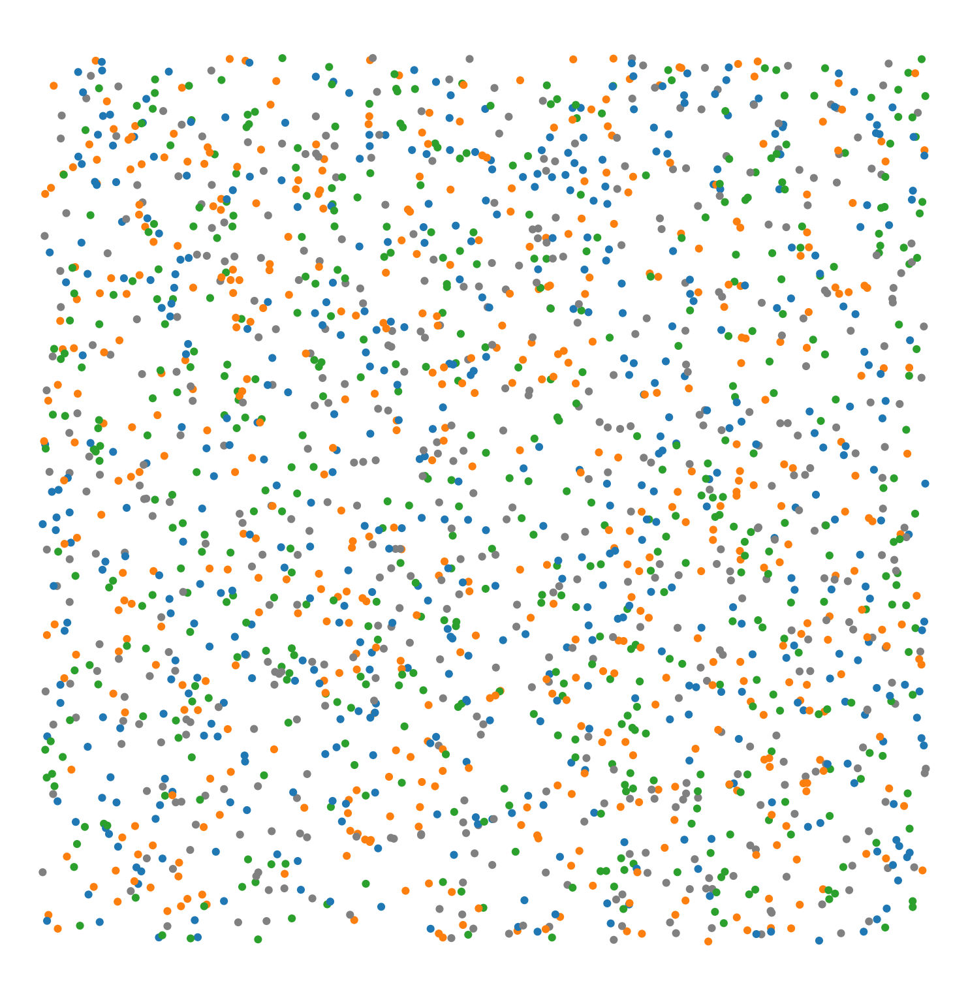
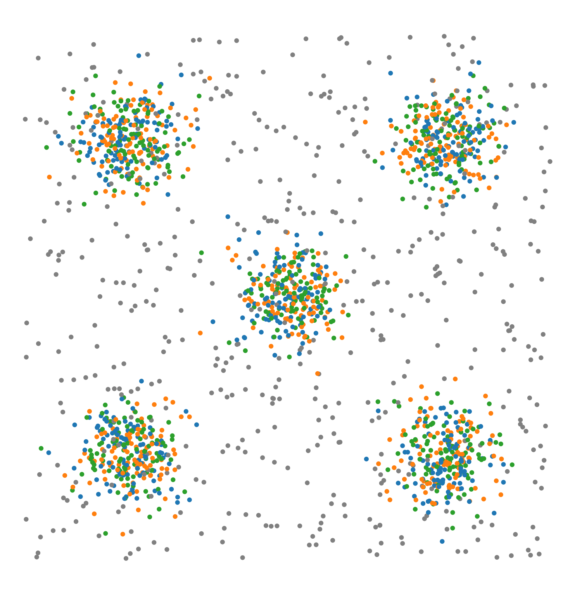
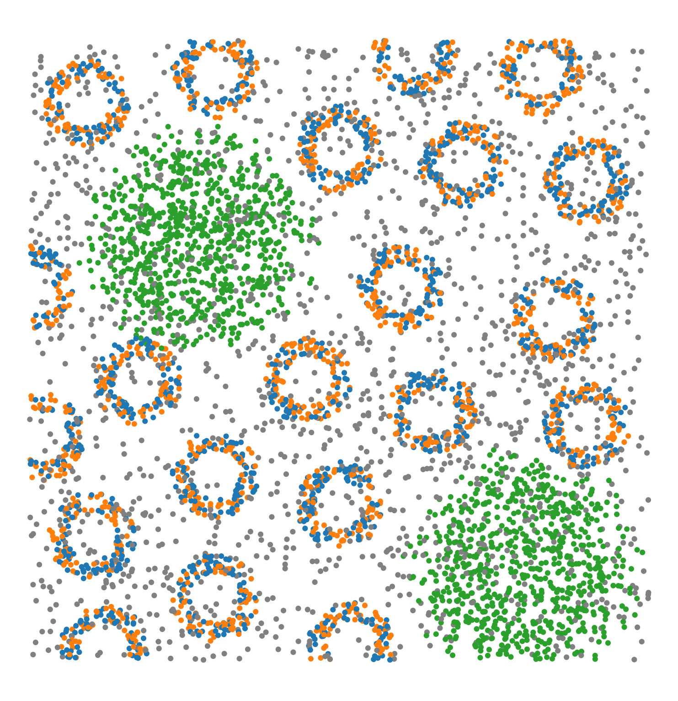
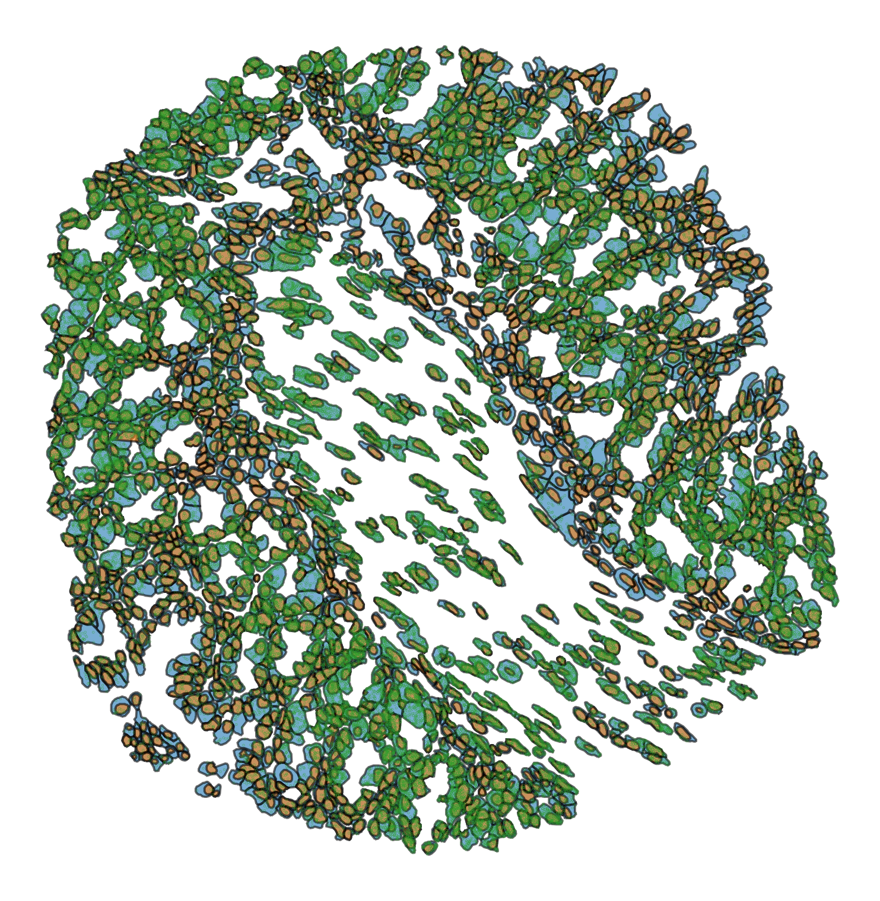
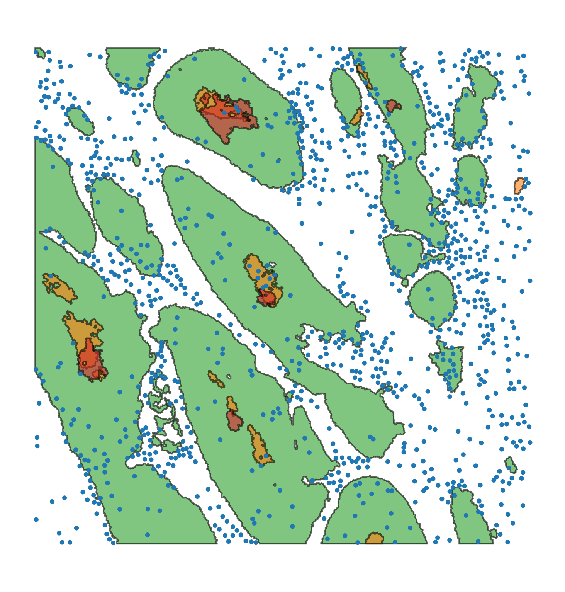
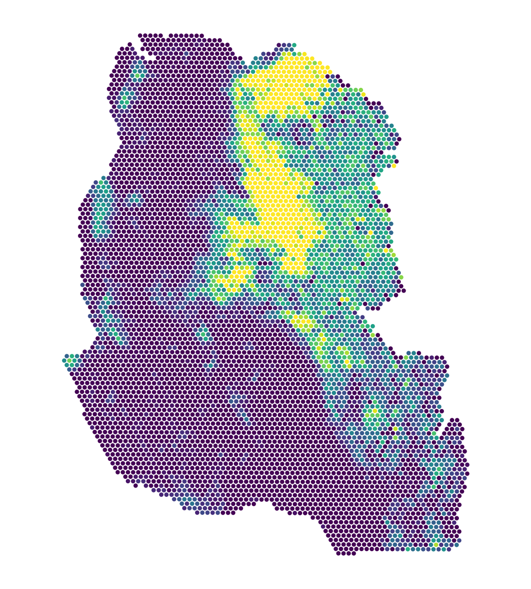

muspan.datasets#
The MuSpAn datasets module provides example datasets as MuSpAn domains for testing and demonstration purposes.
Loading in example datasets
Load an example domain file. |
Example datasets
Domain name |
Visualisation |
Description |
|---|---|---|
Synthetic-Points-Random |
 | A synthetic dataset of points randomly distributed (poisson point process) in a square region. The points have labels ‘Celltype’ with four categories: ‘A’, ‘B’, ‘C’, ‘D’ equally distributed. |
Synthetic-Points-Aggregation |
 | A synthetic dataset of points in aggregated clusters in a square region. The points have labels ‘Celltype’ with four categories: ‘A’, ‘B’, ‘C’, ‘D’. Points with labels ‘A’, ‘B’ and ‘C’ are aggregated in clusters, while points with label ‘D’ are randomly distributed (poisson point process). |
Synthetic-Points-Exclusion |

|
A synthetic dataset of points defining a region of exclusion in a square region. The points have labels ‘Celltype’ with four categories: ‘A’, ‘B’, ‘C’, ‘D’. Points with labels ‘A’, ‘B’ and ‘D’ are aggregated in central region with label ‘C’ points excluded from this region. |
Synthetic-Points-Architecture |
 | A synthetic dataset of points with different spatial architectures in a square region. The points have labels ‘Celltype’ with four categories: ‘A’, ‘B’, ‘C’, ‘D’. Points with labels ‘A’ and ‘B’ form small regular annulus structures. Points in label ‘C’ form a large circle structure. Points in label ‘D’ are randomly distributed (poisson point process). |
Xenium-Healthy-Colon |
 | A selected ROI from a sample of healthy colon tissue from a 10x Xenium dataset provided in the public resources repository, see link. The domain contains cell boundaries, nuclei and a selection of transcripts: Mylk, Myl9, Cnn1, Mgll, Mustn1, Oit1, Cldn2, Nupr1, Sox9, Ccl9. The dataset also contains cell clustering labels produced by Xenium Onboard Analysis using the ‘Graph-based’ method. This dataset is licensed under the Creative Commons Attribution license. |
Macrophage-Hypoxia-ROI |
 | A 1.5mm square region of interest formed from a stack of aligned IHC slides in a human head and neck cancer image, see link. The domain contains cell centre locations of macrophages (CD68+), and shapes which denote boundaries of PanCK (a tumour marker), CAIX (a marker for hypoxia) and Pimonidazole (a marker for severe hypoxia). |
Mouse-Colon-Carcinoma |

|
A 1mm square image of mouse colorectal carcinoma containing 5 different immune markers and one epithelial marker. This dataset was used the paper Extended correlation functions for spatial analysis of multiplex imaging data. |
Visium-Colon-Adenocarcinoma |
 | A sample of mouse stage 2a colon adenocarcinoma generated using the Visium CytAssist Spatial Gene Expression workflow as a 10x resource. This sample was processed using the Human Whole Transcriptome probe set with a spot diameter of 219µm. Gene expression was processed using Space Ranger v2.1 with gene signature Topic similarity included as continuous labels. This dataset is licensed under the Creative Commons Attribution license, see link. |
Earth-Land-Map |

|
A dataset that represents a world map showing Earth’s landmasses. Each country or region is stored as a shape object. The dataset includes labels for each country and groups them into continent collections. This dataset was sourced from this link. |
{kind=link}
{kind=link}
{kind=link}
{kind=link}
{kind=link}
{kind=link}